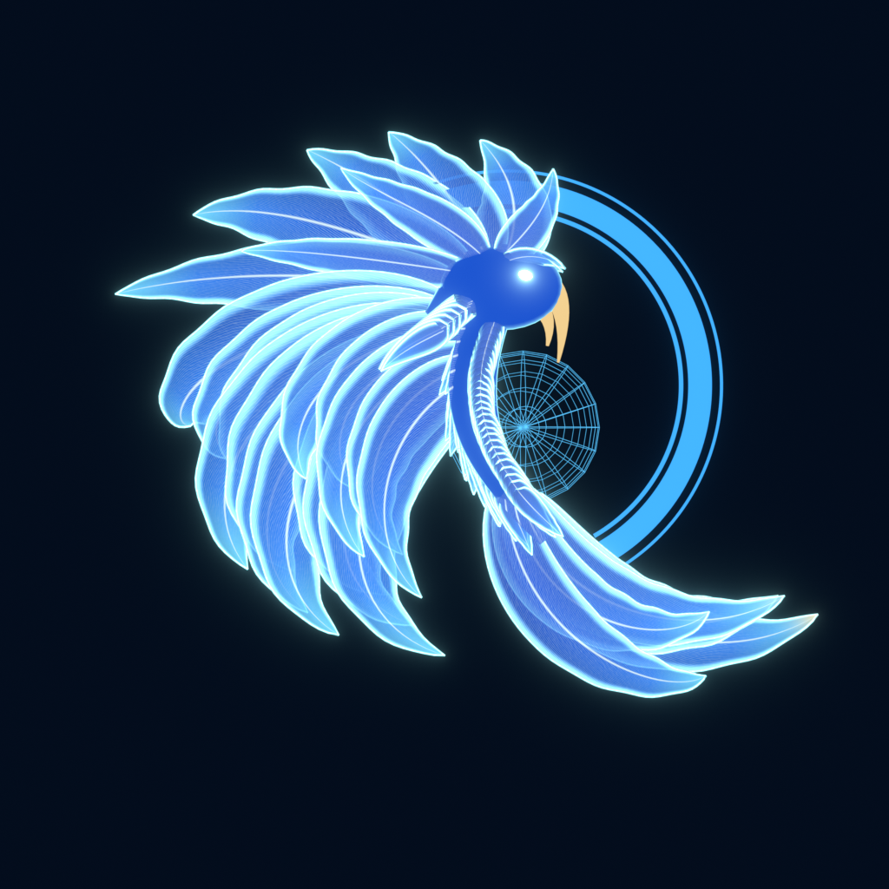
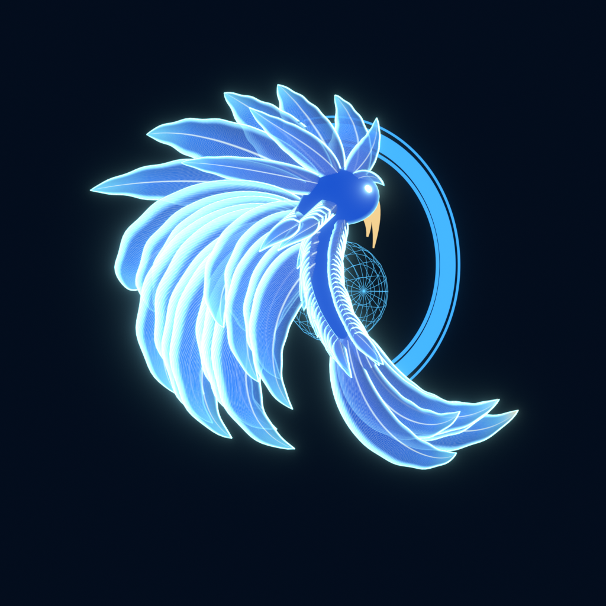
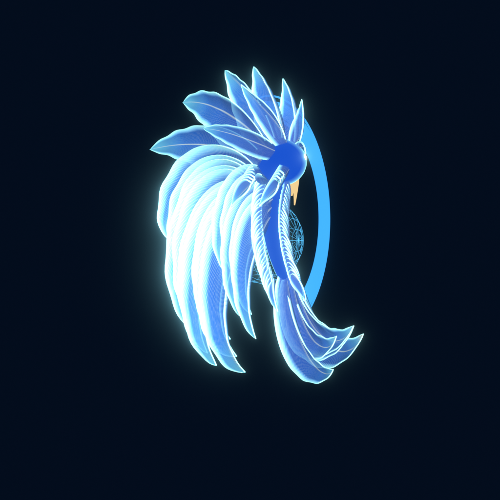
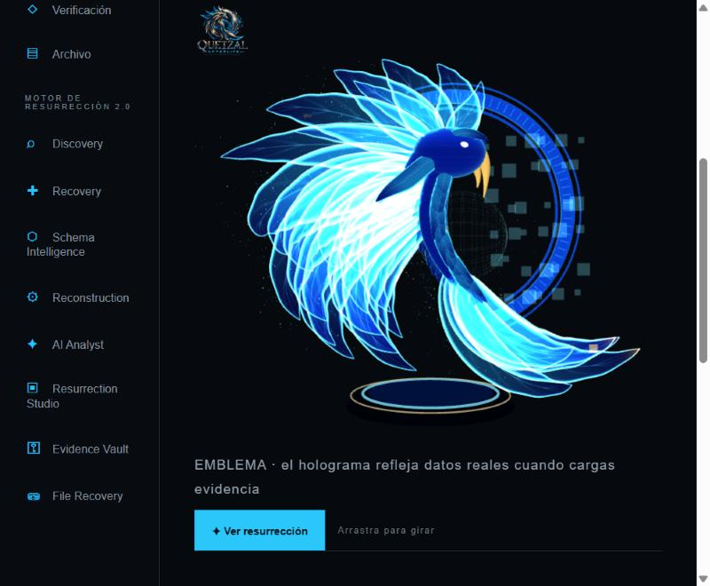
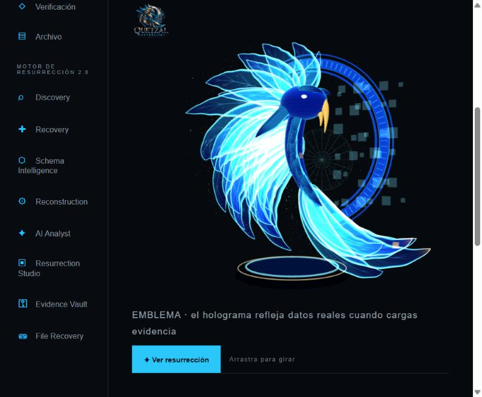
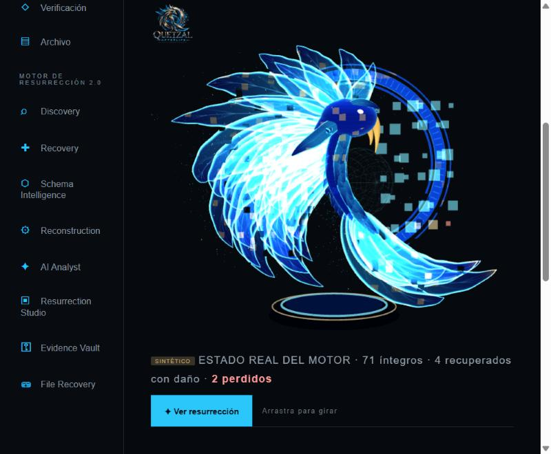
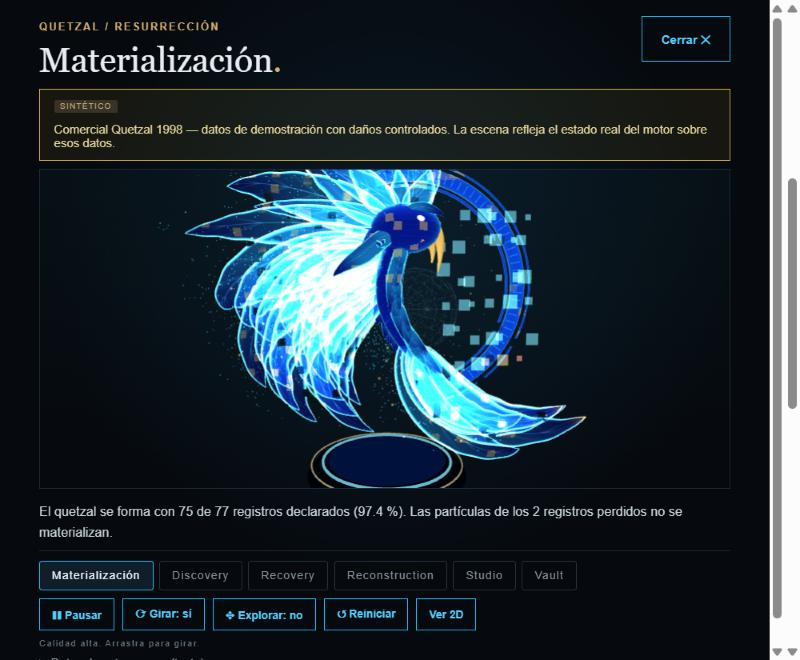
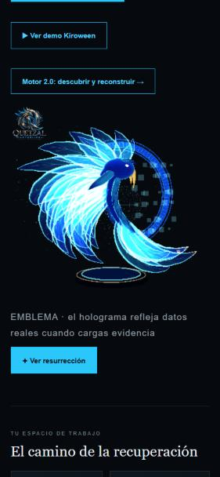

Quetzal GLB integrado: referencia vs modelo
Referencia y renders de Blender
 Referencia oficial
Referencia oficial
Blender, frontal
Blender, 30°
Blender, 60°En la plataforma (build de producción local, Chrome del panel)

Dashboard, frontal30°
60°
Dashboard con escenario sintético (71 íntegros · 4 con daño · 2 perdidos)
Experiencia 3D, etapa Materialización
Móvil 375 px (calidad baja)